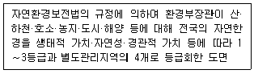
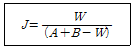

자연생태복원산업기사 (2008-05-11 기출문제)
1과목: 환경생태학개론
1. 20세기에 들어와 산업 활동이 크게 늘어나면서 해양의 이용이 매우 다양해졌고, 그로 인한 해양에 좋지 않은 영향을 끼치는 인간의 활동으로 적합하지 않은 것은?
- 육상개발
- 폐기물 방출
- 양식어업
- 해양목장화
(정답률: 알수없음)

2. 다음 중 분해자의 설명으로 틀린 것은?
- 분해자에는 세균과 곰팡이가 포함된다.
- 생산자와 소비자의 사체와 배설물을 분해한다.
- 인공적으로 합성된 물질은 모두 분해자가 분해한다.
- 물질순환에 매우 중요한 역할을 한다.
(정답률: 알수없음)
3. 다음 중 종다양성에 대한 설명 중 틀린 것은?
- 종다양성이 낮으면 환경의 변화에 민감하여 손상당하기 쉽다.
- 얼마나 많은 생종물들이 생물군집을 이루고 있는가에 대한 정보를 나타낸다.
- 소수의 종을 중심으로 많은 개체가 모여 있는 경우 종다양도가 높다.
- 한 대지역과 같이 가혹한 환경조건에서는 군집의 건전한 유지를 위해 종다양성이 낮아지는 경향이 있다.
(정답률: 알수없음)
4. 호수 또는 연안 바다에서 적조현상이 발생하면 어류나 패류의 생존이 어렵게 된다. 가장 큰 이유는?
- 수온이 높아지기 때문이다.
- 투광량이 감소하기 때문이다.
- 용존산소가 부족해지기 때문이다.
- 먹이가 부족해지기 때문이다.
(정답률: 알수없음)
5. 개체군의 규칙적 분포에 대한 설명 중 옳은 것은?
- 이질적인 공간에 개체군이 분포하기 때문에 집중적으로 분포한다.
- 개체간의 협동이 이루어지기 때문에 특정 서식지에 분포한다.
- 서식단위간 밀도의 분산값이 ‘0’인 특성을 보인다.
- 개체들이 무리 단위로 생활하는 경우에 볼 수 있다.
(정답률: 알수없음)
6. 더운 여름과 추운 겨울이 뚜렷한 북미의 동부, 서부 유럽, 한국, 일본, 중국의 동부 및 칠레 등에 나타나는 식생대로 광엽교목이 우세한 곳은?
- 열대우림
- 온대 초원
- 온대낙엽수림
- 사막식생
(정답률: 알수없음)
7. 생태관광의 기본 원칙으로 적합하지 않은 것은?
- 자연지역의 지속적인 보전에 기여
- 지역사회에 실질적이고 지속적인 혜택 제공
- 환경교육 및 해설의 기회 제공
- 자연의 수용력을 뛰어넘는 관광산업의 성장
(정답률: 알수없음)
8. ‘지속 가능한 개발’, ‘세계 환경과 빈곤문제 해결’을 목표로 2002년 남아프리카공화국에서 열린 ‘리우+10’이라고도 불린 이 지구 정상회의는?
- IUCN
- ESSD
- WSSD
- 지방의제 21
(정답률: 알수없음)
9. 생태계의 구성요소에 대한 설명으로 틀린 것은?
- 생태계의 크게 생물적 요소와 무생물적 요소로 구성된다.
- 생태계에서 생물적 요소는 역할에 따라 생산자, 소비자 , 분해자로 구분한다.
- 대부분의 생산자는 햇빛을 이용한 광합성으로 포도당과 같은 합성물질을 생성한다.
- 소비자는 영양물질을 얻기 위해 죽은 동물과 식물등을 분해한다.
(정답률: 알수없음)
10. 극상 군집에 대한 설명으로 틀린 것은?
- 천이계열의 마지막 단계에 있는 안정된 군집이다.
- 영속적이며 환경과 평형상태를 유지하므로 정적인 특징이 있다.
- 토양극상. 지형극상, 산불극상 등의 상이한 극상유형도 나타난다.
- 극상군집 인식의 관점은 크게 단극상설, 다극상설, 극상유형설로 대별된다.
(정답률: 알수없음)
11. 산불이 난 강원도 내륙의 민둥산에서 식생 천이가 발생한 다면, 다음 중 어떤 순서로 진행되겠는가?
- 지의류 → 토끼풀 → 싸리류 → 소나무 → 신갈나무
- 토끼풀 → 지의류 → 싸리류 → 소나무 → 신갈나무
- 지의류 → 토끼풀 → 싸리류 → 신갈나무 → 소나무
- 토끼풀 → 지의류 → 싸리류 → 신갈나무 → 소나무
(정답률: 알수없음)
12. 발전소에서 연안으로 배출하는 냉각수의 주요 오염원인은?
- 석유류
- 유기화합물질
- 중금속
- 열
(정답률: 알수없음)
13. 다음 중 기온 분포에 따른 대기권의 구분으로 맞는 것은?
- 대류권 - 전리권 - 이온권 - 열권
- 대류권 - 성층권 - 중간권 - 열권
- 성층권 - 이온권 - 중간권 - 우주권
- 이온권 - 대류권 - 성층권 - 전자권
(정답률: 알수없음)
14. 다음 인공호와 자연호(빙식호)의 일반적인 특성을 비교한 것 중 틀린 것은?
- 일반적으로 인공호가 자연호보다 탁도가 높다.
- 인공호의 수체 교환률은 자연호에 비해 짧은 편이다.
- 유연면적은 보통 인공호가 자연호에 비해 크다.
- 인공호보다 자연호에서 오염가능성이 높다.
(정답률: 알수없음)
15. 먹이그물(Food webs)에서 에너지 분배 양상에 대한 설명 중 옳은 것은?
- 초식 먹이사슬에 의한 에너지 전달량이 가장 크다.
- 대부분 생태계의 주요 에너지 흐름은 부니계(죽은 조직)로 운행된다.
- 용존 유기물과 미생물은 먹이 그물 에너지 분배에서 제외된다.
- 분해미생물이 에너지 전달은 생산미생물의 에너지 전달과정과는 별개이다.
(정답률: 알수없음)
16. 생태계에서 군집의 양적 특성(quantitative feature)에 해당되지 않는 요소는?
- 빈도(frequency)
- 종 조성(composition)
- 피토(cover)
- 밀도(density)
(정답률: 알수없음)
17. 조사 대상지에 1m2, 16m2, 25m2, 100m2 등의 면적을 가지는 사각현틀을 설치하고 출현하는 수조의 규격, 개체수, 빈도등을 파악하는 조사 방법은?
- 방형구법
- 선형조사법
- 전수조사법
- 점조사법
(정답률: 알수없음)
18. 다음 중 습원의 특징으로 틀린 것은?
- 이탄층이 발달해 있다.
- 전형적인 습원천이는 연못이나 호수 가장자리에서 볼 수 있다.
- 수분함량이 높고 온도변화가 빠르다.
- 토양환경에 있어 영양분이 적다.
(정답률: 알수없음)
19. 아시아의 스텝, 남아메리카의 팜파스, 아프리카의 벨트 등으로 불리는 대표적인 육상 생태계는?
- 타이가와 침엽수림
- 열대우림
- 지중해서 관목지대
- 초원
(정답률: 알수없음)
20. 정수식물(emerged plant, 추수식물)만으로 구성된 것은?
- 갈대, 부들, 줄
- 수련, 연꽃, 마름
- 부레옥잠, 생이가래, 개구리밥
- 붕어말, 올수세미, 검정말
(정답률: 알수없음)
2과목: 환경학개론
21. 국토의 계획 및 이용에 관한 법령상에서 녹지지역을 자연환경·농지 및 산림의 보호, 보건위생, 안보와 시가지의 무질서한 방지를 위하여 녹지의 보전이 필요한 장소에 지정하는 것으로 특성에 따라 3개 지역으로 구분하는데 바르게 짝지워진 것은?
- 보전녹지지역, 자연녹지지역, 일반녹지지역
- 보전녹지지역, 반자연녹지지역, 생산녹지지역
- 보전녹지지역, 일반녹지지역, 생산녹지지역
- 보전녹지지역, 자연녹지지역, 생산녹지지역
(정답률: 알수없음)
22. 생태계 복원계획 수립을 위한 다양한 구상으로 거리가 먼 것은?
- 생태계의 천이과정을 고려한다.
- 생물 서식공간으로서의 기능을 포함하는 것이 바람작하다.
- 수리 수문학적 고려와 아울러 수질개선을 위한 접근이 중요하다.
- 유역의 개념보다는 단위생태계의 구조와 기능을 중심으로 고려하는 것이 더 좋다.
(정답률: 알수없음)
23. 인공적으로 변경된 하천의 자연복원에 있어 고려되이야 할 대상이 아닌 것은?
- 식생 회복이 가능한 다공질 공간으로 구성된 요철청 수제부의 조성
- 모래톱과 자갈밭의 제거
- 홍수의 영향을 고려한 평면, 종단의 요철 형성과 수제선이 소재 선정
- 여울과 소의 형성을 통한 사행부의 다양성 유지
(정답률: 알수없음)
24. 사후환경영향조사가 필요한 사업의 특성으로 틀린 것은?
- 사업에 의한 환경영향과 영향에 따른 저감 방안이 잘 파악되지 않은 경우
- 사업계획내용과 공사방식의 계획변경이 예상될 때
- 환경에 대한 잠재적 악영향이 예상될 때
- 사업의 결과 경제성이 불투명 할 때
(정답률: 알수없음)
25. 경관생태학적 측면에서 ‘가장자리 효과’에 대한 설명으로 틀린 것은?
- 수직, 수평적으로 다양한 식생구조를 갖는 공간의 가장자리는 야생생물종이 풍부하다.
- 주퐁향과 태양에 노출된 사면에서 가장자리의 폭은 좁다.
- 가장자리의 경사가 급할수록 수직이동이 증가한다.
- 곡선형 경계는 경계를 가로지르는 수직이동이 일어나기 쉽다.
(정답률: 알수없음)
26. 다음 중 환경적으로 건전하고 지속 가능한 개발(Environmentally Sound and Sustainable Development)의 원칙과 거리가 먼 것은?
- 미래세대의 원칙
- 자연보호의 원칙
- 사회 형평의 원칙
- 경지효율성 증대의 원칙
(정답률: 알수없음)
27. 국토종합계획에 대한 주요 내용 중 틀린 것은?
- 국토 전역을 대상으로 정기적인 발전방향을 제시
- 공간계획을 포함한 토지이용에 관한 모든 계획의 최상위 계획
- 국토의 이용, 개발, 보전에 관한 장기구상
- 토지이용에 관한 법적 구속력을 가짐
(정답률: 알수없음)
28. 광범위한 인간활동이 생태계에 미칠 수 있는 영향을 측정하는 생태적 위해성 평가(ecological risk assessment)의 3단계가 아닌 것은?
- 문제점 파악
- 문제 분석
- 위해성 기술
- 가설 모델화
(정답률: 알수없음)
29. 생물분산(dispersal)의 3가지 방식이 아닌 것은?
- 종분화(speciation)
- 확산(diffusion)
- 도약분산(jump dispersal)
- 영속이주(secular migration)
(정답률: 알수없음)
30. 환경영향 평가 방법 중 목표달성 매트릭스 법을 이용하여 다음을 계산하였을 때 계획 A의 목표 달성 값은? (단, 계획 A : 접근성(2), 지역사회 파괴(-3), 접근성 가중치(2), 지역사회 파괴의 가중치(1))
- 7
- 1
- -1
- -4
(정답률: 알수없음)
31. 국토기본법에서 정하는 국토공간계획의 지역계획에 해당되지 않는 것은?
- 수도권발전계획
- 광역권개발계획
- 종합관광계획
- 개발촉진지구개발계획
(정답률: 알수없음)
32. 자연공원의 지정기준으로 적합하지 않은 것은?
- 자연생태계의 보전상태가 양호하거나 보호 야생동·식물 등이 서식할 것
- 자연경관의 보전상태가 양호하여 훼손 또는 오염이 적으며 경관이 수려할 것
- 이용을 위한 개발을 허용할 수 있도록 훼손된 경관과 생태계가 포함되도록 할 것
- 국토의 보전·이용·관리측면에서 균형적인 자연공원의 배치가 될 수 있을 것
(정답률: 알수없음)
33. 다음 도시관리계획에 관한 내용 중 틀린 것은?
- 도시 공간구조 형성이 근간을 이룬다.
- 군수가 10년마다 관할구역의 도시관리계획에 대하여 대통령령이 정한 바에 따라 타당성을 재검토하여 정비한다.
- 용도지역의 지정, 변경에 관한 계획이 포함된다.
- 도시의 발전방향을 구체적으로 정착화시키는 중기계획이다.
(정답률: 알수없음)
34. 생태계의 기본적인 특질이 아닌 것은?
- 체계 내에서의 에너지 흐름
- 먹이연쇄를 통한 물질의 순환
- 체계 내의 정상상태를 유지하려는 향존성
- 생태계를 자세히 관찰할수록 보이는 단순성
(정답률: 알수없음)
35. 자연환경보전계획체계와 공간계획체계와의 비교 중 잘못된 것은?
- 자연환경보전계획은 국가환경보전계획, 시·도 환경보전계획, 시·군·구 환경보전계획의 체계를 갖추고 있다.
- 자연환경보전계획과 공간계획체계는 정책계획과 함께 실행계획도 같이 수립되어 있다.
- 시·도의 자연환경보전실천계획은 전국환경보전계획을 지침으로 자체적인 실천계획을 수립하도록 한다.
- 자연환경보전계획에는 생태통로 설치, 훼손지 복원 등 자연환경보전을 위한 구체적인 사업에 관한 사항을 규정하고 있다.
(정답률: 알수없음)
36. 토지의 패치화, 단편화가 진행되고 경관을 구성하는 공간 요소의 배열과 생태적인 성질이 변화하는 것과 가장 관계가 먼 것은?
- 물리적 환경 교란
- 자연적 교란
- 생물다양성 보전
- 인간활동
(정답률: 알수없음)
37. 환경친화형 도시의 개념으로 가장 거리가 먼 것은?
- 쾌적한 생활환경에서의 욕구 충족
- 차세대를 위한 지구환경에의 배려
- 생물과의 공생 추구
- 재생 기능 에너지 사용 억제
(정답률: 알수없음)
38. 환경의 특성으로 맞는 것은?
- 환경문제는 단일 변수들에 의해 발생하고 상호관련성이 없다.
- 환경문제는 지역적으로 발생하여 지역차원에서 해결할 수 있다.
- 환경오염의 발생은 엔트로피의 증가를 의미한다.
- 환경은 한번 오염되면 영원히 원상으로 회복될 수 없다.
(정답률: 알수없음)
39. 다음 설명이 가르키는 용어는?

- 녹지·자연도
- 생태·자연도
- 경관·분석도
- 토지·적성도
(정답률: 알수없음)
40. 우리나라의 경관요소 및 지역의 자연성 정도에 따른 경관유형 및 해설이 부적합한 것은?
- 순수한 자연경관 : 인공적 요소가 없는 야생경관
- 반자연경관 : 자연적 요소가 배경으로 보이는 경관
- 반인공경관 : 인공적인 요소가 전경에 보이는 경관
- 인공경관 : 자연적 요소가 없는 도시지역 경관
(정답률: 알수없음)
3과목: 생태복원공학
41. 민둥산 및 황계가 심한 황폐지에서 비탈다듬기공사에 식생복원을 위한 사방공법으로 가장 많이 쓰인 것은?
- 떼붙이기공
- 씨뿌리기공법
- 선떼붙이기공법
- 나무심기
(정답률: 알수없음)
42. 소생태계 조성시 수변부의 조속한 생태복원을 위한 호안조성방법으로 적합하지 못한 공법은?
- 방수를 위한 콘크리트 호안
- 곡선형 나무 말뚝 호안
- 다양한 형태의 자연소재 호안
- 대상지 토양을 이용한 토사 호안
(정답률: 알수없음)
43. 다음 중 토양의 3상이 아닌 것은?
- 고상
- 괴상
- 액상
- 기상
(정답률: 알수없음)
44. 배수구를 통과하는 유량이 10m3/sec이고, 배수로를 흐르는 물의 평균유속이 4m/sec일 때 배수구조물의 단면적 (m2)은 얼마인가?
- 40
- 5
- 2.5
- 0.4
(정답률: 알수없음)
45. 다음 중 생태계 또는 서식처 단편화에 가장 큰 영향을 미치는 개발행위는?
- 택지개발
- 산업단지조성
- 체육시설건설
- 도로, 철도 등의 건설
(정답률: 알수없음)
46. 다음 중 식재지반이 갖추어야 할 물리적 요건에 해당되지 않는 것은?
- 유효수분
- 유효토층
- 토양경도
- 토양산도
(정답률: 알수없음)
47. 다음 초화류 중 지피효과가 뛰어나고 꽃이 오랫 동안 피므로 화단의 가장자리나 암석정원에 적합하며, 병충해가 거의 없는 것은?
- 플록스
- 아이리스
- 프리뮬러
- 국화
(정답률: 알수없음)
48. Yamanaka식(山中式)토양경도계에서 어느 정도의 경도지수가 일반적으로 식생의 뿌리 발달이 어렵다고 판단하는가?
- 15mm이상
- 20mm이상
- 25mm이상
- 30mm이상
(정답률: 알수없음)
49. 다음 토양개량제 중 질석을 고온에서 처리하여 분말로 만들고, 색깔은 회백색 또는 갈색으로 진주 광택이 나는 것으로 산에 쉽게 분해되고, 양이온 교환능력이 크며 가열하면 팽창하는 것은?
- 펄라이트
- 버미큘라이트
- 제올라이트
- 벤토나이트
(정답률: 알수없음)
50. 습지생태계를 창출하기 위하여 갈대를 식재하고자 한다. 부엽토를 이용하여 간이 토양을 만들고, 갈대 종자를 파종하고 키워 창출하고자 하는 장소에 어느 정도 성장한 상태에서 이식하는 방법을 무엇이라고 하는가?
- 경이식 방법
- 블록이식 방법
- 종자묘 이식방법
- 지하경 이식 방법
(정답률: 알수없음)
51. 벽체에 소형의 근상흡반(根狀吸盤)을 부착하면서 기어 올라가는 녹화 식물은?
- 노박덩굴
- 으아리
- 등나무
- 담쟁이
(정답률: 알수없음)
52. 습지의 복원에 있어서 호안을 조성하고자 할 때 습지식물의 발달 측면에서 다음 항목 중 가장 바람직한 경사는?
- 1 : 1
- 1 : 2
- 1 : 3
- 1 : 4
(정답률: 알수없음)
53. 양단쪽의 단면적이 각각 6m2과 8m2이고, 두 면적 사이의 연장 길이가 10m인 성토 체적을 구하고자 한다. 양단면평균법으로 값을 구하면 얼마인가?
- 68m3
- 72m3
- 70m3
- 80m3
(정답률: 알수없음)
54. 훼손지 녹화 후 실시되는 멀칭(mulching)의 효과로 부적합한 것은?
- 태양열의 복사와 반사를 증가시킨다.
- 불완전한 토양의 침식을 방지한다.
- 유기질 멀칭 재료는 토양의 비옥도를 증진시킨다.
- 지표면의 수분 증발이 억제되어 토양수분이 유지된다.
(정답률: 알수없음)
55. 다음 중 일반적인 천이이론에 대한 설명으로 틀린 것은?
- 천이란 시간의 흐름에 따라 식물군집의 변화를 나타낸다.
- 생태적 복원에 있어 중요한 이론이며, 복원을 위한 식재설계기법에 유용하다.
- 복원 후에 천이가 자연스럽게 일어나므로 바람직한 관리방향을 제시하는 데에는 관계가 없다.
- 천이가 진행되어감에 따라 종구성과 군집구조도 변화하게 된다.
(정답률: 알수없음)
56. 다음 토양 및 영양분에 대한 설명으로 틀린 것은?
- 비료의 3요소는 토양에서 부족하기 쉬운 N, P, K을 말한다.
- 토양은 영양분이 풍부하면 비옥하고 토양의 수분, 온도, 통기성 등이 적당할 때 생산성이 높아지므로 토양관리가 필요하다.
- 토양의 효용을 극대화하고 지력을 높이기 위해서는 토양 속의 미생물 생장과 번식을 억제하여야 한다.
- 식물에 따라 흡수할 수 있는 영양소의 유효도(availability)를 조사하여 적당한 시비를 하여야 흡착이나 휘산에 의한 손실을 막을 수 있다.
(정답률: 알수없음)
57. 옥상녹화시스템의 구성요소 중 식생충의 기능 및 시공시 주의 사항으로 거리가 먼 것은?
- 식물 뿌리로부터 방수층과 건물을 보호하는 기능을 한다.
- 옥상녹화시스템에서 도입식물로서 피복하는 기능을 한다.
- 유지관리 프로그램, 토양층의 두께, 토양 특성을 종합적으로 고려하여 식재 소재를 선택한다.
- 지역의 기후 특성은 물론 강한 일사, 바람 등 극단적인 조건에서 생육 가능한 식물소재의 선택이 필수적이다.
(정답률: 알수없음)
58. 다음 중 토양속에서 질소를 고정하는 식물이 아닌 것은?
- 펭나무
- 다릅나무
- 주엽나무
- 보리수나무
(정답률: 알수없음)
59. 다음 중 시멘트와 물이 반응할 때 발생하는 열을 무엇이라 하는가?
- 경화열
- 잠열
- 수화열
- 응결열
(정답률: 알수없음)
60. 수변 완충녹지대의 유형 중 Vegetated filter strip에 해당되는 내용이 아닌 것은?
- 정화녹지대는 수로 옆에 위치할 수도 있지만, 농장에서 유출된 유출수를 처리하기 위해 농장 건물 근처에 종종 사용된다.
- 범람원 습지는 낮은 지대에 위치하며, 범람원에 견디는 갈대와 같은 식물로 구성되어 있다.
- 식재된 지역이나 자생식물이 있는 녹지대이다.
- 정화녹지대와 풀로 덮인 수로는 유출수의 속력을 감소시켜 침전물을 가두는 역할을 한다.
(정답률: 알수없음)
4과목: 생태조사방법론
61. 생태조사의 조사 빈도에 관한 설명 중 옳지 않은 것은?
- 생태 조사시 적절한 조사 횟수와 시기는 전체 생태계의 이해와 복원에 대한 중요한 단서를 제공한다.
- 조류(새)와 같은 일부 생물군은 텃새와 철새 등으로 나뉘어 계절에 따른 출현 특성이 현저히 다르다.
- 현실적으로 조사 횟수는 많을수록 좋으나, 일반적으로 조류(새)는 계절별로 연 4회 혹은 월 1회 정도가 적당하다.
- 수생식물의 확인은 장마나 태풍 이후인 9월 이후에 종확인이 가장 유리하다.
(정답률: 알수없음)
62. 수중 서식지 조사표 작성에 기록할 물 시료와 연관하여 기입 할 항목이 아닌 것은?
- 수심(m)
- 기슭까지의 거리(m)
- 전기전도도
- 비중
(정답률: 알수없음)
63. 토양환경 조사를 위하여 채토(採土)하는 방법으로 적합한 것은?
- 토양시료는 토양오거를 지면의 수평방향으로 박아서 채취한다.
- 물밑의 연한 저질토를 채취할 때는 채니기를 사용한다.
- 표토만을 채집할 경우는 납작한 삽으로 단면을 만들어 채토한다.
- 저질토는 ph는 실험실에 운반하여 측정하도록 한다.
(정답률: 알수없음)
64. 다음 저서성 대형 무척추동물의 채집방법으로 부적합한 것은?
- 수심 200cm이상의 수역에서는 망목지름 0.5mm의 surber net를 사용한다.
- 유속이 느린 수역에서는 Grab, Scoop를 이용하여 가능한 한 수초가 풍부한 지점에서 채집한다.
- 수폭이 좁고 수심 50cm이상인 강이나 호수에서는 자루기 달린 Grab을 이용하여 하상을 끌어 채집한다.
- 수폭이 넓은 수체에서는 Ekman grab, Ponar dredge를 이용하여 채집한다.
(정답률: 알수없음)
65. 다음 중 생태학 연구 방법의 단계를 바르게 나타낸 것은?
- 문제의 파악 → 표본의 수집 → 조사계획 수립 → 연구 대상의 범위 확정 → 자료 분석
- 문제의 파악 → 연구 대상의 범위 확정 → 조사계획 수립 → 표본의 수집 → 자료 분석
- 조사계획 수립 → 문제의 파악 → 연구 대상의 범위 확정 → 표본의 수집 → 자료 분석
- 연구 대상의 범위 확정 → 문제의 파악 → 조사계획 수립 → 표본의 수집 → 자료 분석
(정답률: 알수없음)
66. 생태계의 대기환경 조사에 쓰이는 기후도인 Winkler의 Climate-diagram에서 볼 수 없는 사항은?
- 월평균 기온
- 월평균 강수량
- 월평균 습도
- 관측지점의 해발 높이
(정답률: 알수없음)
67. 다음은 Jaccard의 유사도 지수(J)의 계산식이다. 'W'는 무엇을 나타내는가?

- 두 군집에서 공통되는 종수
- 두 군집에서 공통되는 종수의 백분율
- 두 군집의 총 종수
- 두 군집에서 독립적으로 나타나는 종수의 합
(정답률: 알수없음)
68. 온도측정에 관한 설명으로 옳지 않은 것은?
- 기온은 대기와 온도계가 평형이 될 때의 온도이다.
- 온도의 단위는 Celsius와 Fahrenheit 등이 있다.
- 기온은 공간적 변화가 있으므로 여러 개의 봉상 온도계로 측정한다.
- 봉상온도계의 종이 가리개는 피부온도 전도를 막기 위함이다.
(정답률: 알수없음)
69. Shannon-Wiener(Weaver)의 종다양성 산출공식은 H'=-∑Pi log Pi과 같이 표현된다. 이 공식에 대한 설명으로 옳지 않은 것은?
- ∑Pi = 1 이다.
- log의 밑은 항상 '10'만을 사용한다.
- Pi는 I종의 전체에 대한 비율이다.
- -부호는 log Pi 가 '-'값을 나타내어, 이를 양수로 만들기 위한 것이다.
(정답률: 알수없음)
70. COD(화학적 산소요구량)에 관한 설명으로 틀린 것은?
- COD분석방법에는 산성 (KMnO4 법과 알칼리성 KMnO4법이 있다.
- 일반적으로 공장폐수 가운데 무기물을 함유하고 있어 BOD측정이 불가능한 경우에 사용한다.
- 주로 유기물질의 함량을 간접적으로 나타내는 지표이다.
- COD분석에는 BOD측정시간에 비해 장시간 소요된다.
(정답률: 알수없음)
71. 조류군집조사시에 선 조사법은 시속 몇 km가 가장 적당한가?
- 7∼8km
- 5∼6km
- 3∼4km
- 1∼2km
(정답률: 알수없음)
72. 초본식물의 생산성 측정을 위한 가장 보편적이로 간단한 방법은?
- 수확법
- 상대생장법
- 영구방형구법
- 동화챔버법
(정답률: 알수없음)
73. 실험오차를 줄이는 방법이 아닌 것은?
- 처리에 반복을 둔다.
- 표본의 크기(n)를 작게 한다.
- 난수표를 사용하여 처리를 무작위 배치한다.
- 실험을 균일하게 관리한다.
(정답률: 알수없음)
74. 치수분석(Dimension analysis)법으로 실제 측정되는 것은?
- 현존량
- 2차 생산량
- 총 생산량
- 호흡량
(정답률: 알수없음)
75. 다음 중에서 Braun-Blanquet 법에 의한 식생조사에서 조사 항목인 것은?
- 빈도
- 최단거리
- 피도계급
- 흉고직경
(정답률: 알수없음)
76. Braun-Blanquet 법으로 식물 군집을 조사할 때, 식생 조사표의 자료에 민들레의 군도 계급이 3으로 표시되었다. 이에 대한 분석으로 적합한 것은?
- 고립하여 생육한다.
- 직경 1cm 이하로 집합 생육한다.
- 직경 5cm 이하로 집합 생육한다.
- 방석 넓이 정도로 집합 생육한다.
(정답률: 알수없음)
77. Dredge형 채취 기구는 어떤 생물의 표본 채취에 적합한가?
- 파충류
- 저서성 대형 무척추동물
- 동물성 플랑크톤
- 식물성 플랑크톤
(정답률: 알수없음)
78. 방사성 동위원소인 14CO2를 이용한 생산성의 측정에 대한 설명 중 옳은 것은?
- 육상생태계 및 수중생태계의 광합성 생물의 생산성 측정에 이용할 수 있다.
- 조사 기구 내와 식물체 내의 14CO2 농도 변화만 측정하면 광합성량을 산출할 수 있다.
- 생산성이 낮은 생태계에서 유용하게 쓰이며 경비가 많이 소요되지만 정확성은 매우 높다.
- 일반적으로 시중에서 구입한 14CO2함유 제품(1-10mCi)을 그래도 이용하여 생산성을 측정한다.
(정답률: 알수없음)
79. Raunkiaer가 분류하 식물의 생활형 중 지표식물이란?
- 겨울눈이 지상 30m 이상의 지표면에 위치한 식물
- 겨울눈이 지상 2∼30m의 지표면에 위치한 식물
- 겨울눈이 지상 0.3∼2m의 지표면에 위치한 식물
- 겨울눈이 지상 0.3m의 지표면에 위치한 식물
(정답률: 알수없음)
80. 생태계조사의 계획 수립 원칙에 해당되지 않는 것은?
- 조사목적의 인지
- 조사 대상 우선 순위 결정
- 주변환경 및 생물군과의 연관성 고려
- 동·식물상 조사
(정답률: 알수없음)